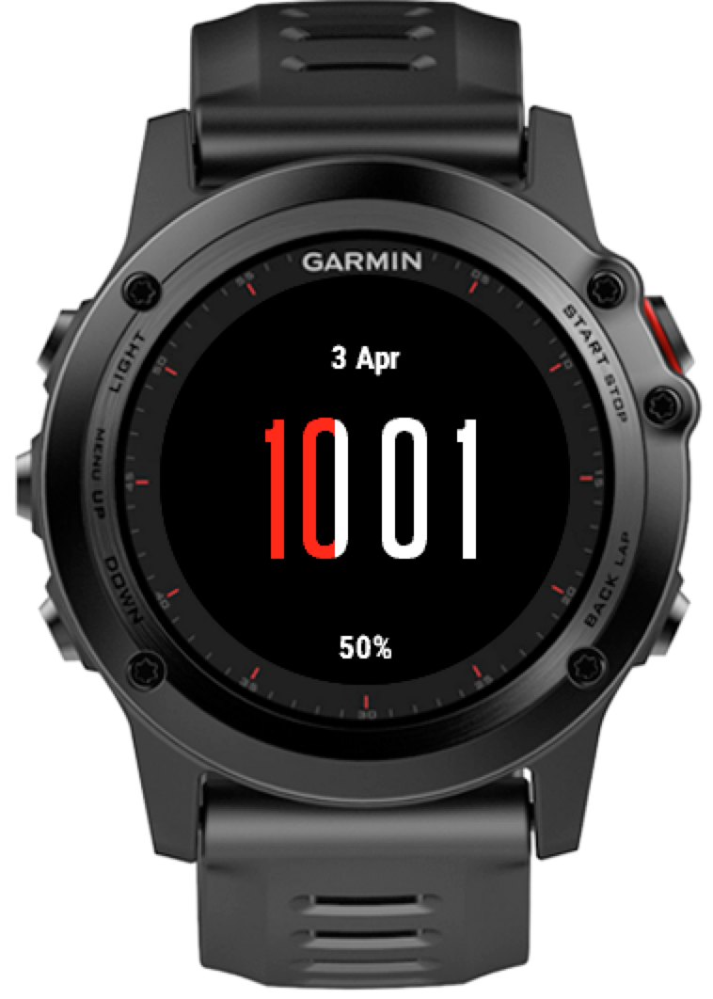
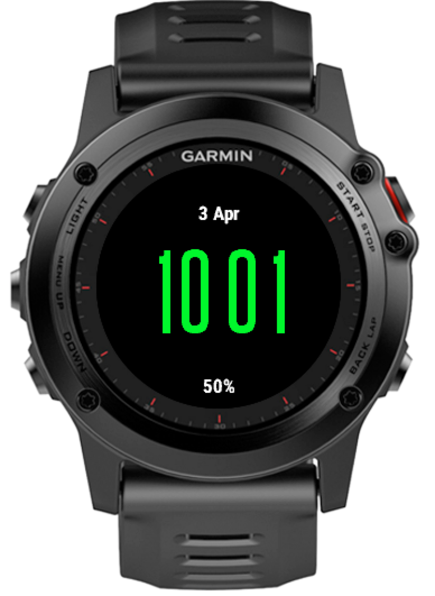

For a while Garmin have been adding “wearable technology” functionality to their watches - notifications from the phone etc. I got a Garmin Fenix 3 for Christmas and had a play with the vast number of watch faces and widgets that were available.
The recent updates have really added some great functionality and I ended up settling on the out of the box digital face as my normal watch face but I still wanted to have a go at creating my own watch.
###Monkey C The programming language used to develop the faces, apps, widgets and data fields is called Monkey C and the IDE is mostly intended to be Eclipse.
Its almost certainly going to be worth your time looking at the Garmin developer site to get the full over view of whats required, but I’m covering the headlines below.
####Getting the SDK First you need to download the Garmin SDK from here. I’m using a Macbook so I’ve dropped it in /usr/local/garmin-sdk.
####Eclipse Add in If you look at the getting started pages here you’ll get all the information about adding the Eclipse add in which will give the you project template and intellisense as well as access to some richer wizards for interacting with the simulator.
I’m not very comfortable using Eclipse so I was pleased to see that there is an Intellij plugin that someone had started.
####Intellij Plug in The IntelliJ plugin is added in the normal way, the details about it are here.
At the time of writing this it was fairly basic and doesn’t have many features, I had to rely on the API docs to get the message signatures of everything I needed to use.
####API Docs The API docs are pretty good for getting the gist of what you want to do. You need to know what you want to do and see if you can rather, but thats no different to any API I guess.
###My First Watch face And so to my first watch face. I wanted to have a clean digital watch without the clutter of bars and tickers. I did want to know my relative step progress and the current battery level though, I’ve been caught out a few too many times.
My understanding from the docs is that your watch face updates minutely in low power mode until the gesture of looking at the watch is detected then it becomes every second. There are some methods which are called during this state change but I didn’t have any need for them.
I’m loading the components programatically so I don’t need much in my layouts file
<layout id="WatchFace">
</layout>
Your watch face must extend the Ui.WatchFace class
class FirstwatchfaceView extends Ui.WatchFace {
function initialize() {
WatchFace.initialize();
function onLayout(dc) {
setLayout(Rez.Layouts.WatchFace(dc));
function onUpdate(dc) {
// clear the display
dc.clear();
var font = Gfx.FONT_NUMBER_THAI_HOT;
// get the info needed
var activity = ActivityMonitor.getInfo();
var stats = Sys.getSystemStats()
var clockTime = Sys.getClockTime();
var today = Time.today();
var dateInfo = Time.Gregorian.info(today, Time.FORMAT_MEDIUM);
var timeString = Lang.format("$1$ $2$", [clockTime.hour, clockTime.min.format("%02d")])
// get the text size to work out where to position it
var textDim = dc.getTextDimensions(timeString, font);
var x = (dc.getWidth() / 2);
var y = (dc.getHeight() /2) - textDim[1] /2;
var stepsX = x - textDim[0]/2 ;
var batteryPercent = Lang.format("$1$%", [stats.battery.format("%02d")]);
var date = Lang.format("$1$ $2$", [dateInfo.day, dateInfo.month]);
var percent = (activity.steps*100)/activity.stepGoal
// set the whole screen black
dc.setColor(Gfx.COLOR_BLACK, Gfx.COLOR_BLACK);
dc.fillRectangle(0, 0, dc.getWidth(), dc.getHeight())
if (percent > 100) {
dc.setColor(Gfx.COLOR_GREEN, Gfx.COLOR_BLACK);
dc.drawText(x,y, font, timeString, Gfx.TEXT_JUSTIFY_CENTER);
} else {
dc.setColor(Gfx.COLOR_RED, Gfx.COLOR_BLACK);
dc.fillRectangle(stepsX, y+1, min(percent, textDim[0]), textDim[1]);
dc.setColor(Gfx.COLOR_WHITE, Gfx.COLOR_BLACK);
dc.fillRectangle(stepsX + percent, y+1, textDim[0]-percent, textDim[1]);
dc.setColor(Gfx.COLOR_TRANSPARENT, Gfx.COLOR_BLACK);
dc.drawText(x,y, font, timeString, Gfx.TEXT_JUSTIFY_CENTER);
}
dc.setColor(Gfx.COLOR_WHITE, Gfx.COLOR_BLACK);
dc.drawText(x, (dc.getHeight() - 10 - (dc.getFontHeight(Gfx.FONT_TINY))), Gfx.FONT_TIN batteryPercent, Gfx.TEXT_JUSTIFY_CENTER);
dc.drawText(x, (10 + dc.getFontHeight(Gfx.FONT_TINY)), Gfx.FONT_TINY, date Gfx.TEXT_JSTIFY_CENTER); }
function min(a, b) {
if (a > b) {
return b;
}
return a;
}
Running in IntelliJ for me is a case of Shift+F10 and the Run Configuration loads the simulator.
In the simulator you can set the levels of activity and change properties of the device such as battery status and GPS etc.
 Daily steps in progress
 Daily steps in completed